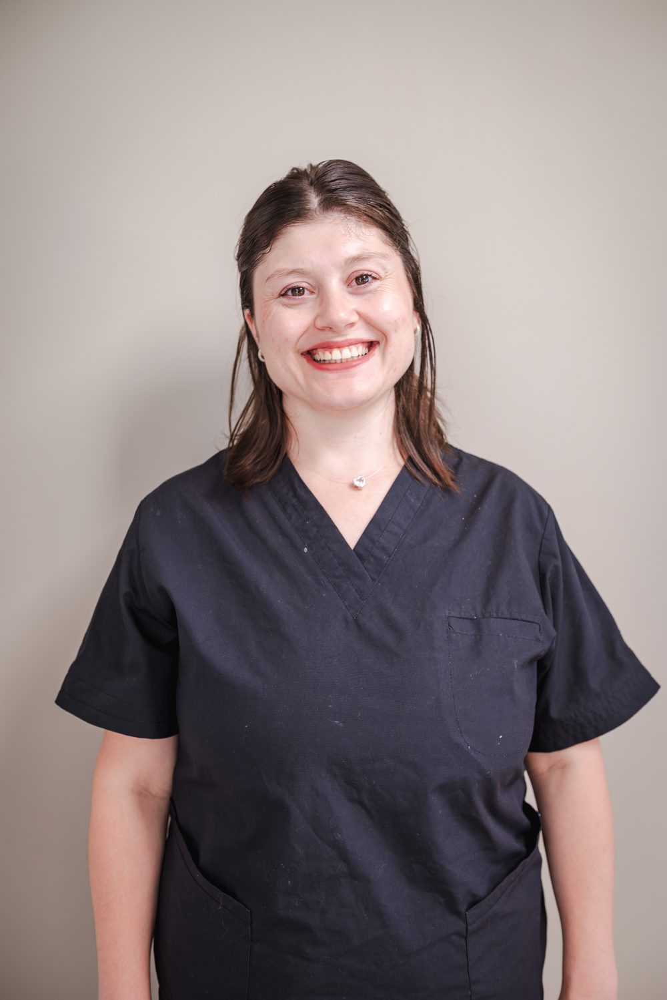

Para enfermeras y equipos de salud · Mentoría uno a uno
Navegación oncológica desde enfermería
Empezá a navegar pacientes con un plan propio, en tu institución o por tu cuenta. Lo que aprendí en cinco años de navegación oncológica, en 5 horas y media y con acompañamiento uno a uno.
Elegí tu camino
El programa es el mismo; lo que construimos juntas se adapta al ámbito donde vas a navegar.
En tu institución
Salís con la propuesta lista para presentar a tu dirección.
A quién navegar, cómo sumarte a los circuitos que ya existen, quiénes son tus aliados y qué indicadores medir.
Por tu cuenta
Salís con tu encuadre para empezar a acompañar pacientes.
Alcances y límites del rol, cómo articular con el equipo tratante del paciente, confidencialidad y por dónde arrancar.
Qué incluye
- 2 encuentros por videollamada, uno a uno (2 h y 1 h 30).
- 2 h de material y un autodiagnóstico de tu ámbito, a tu ritmo.
- Devolución escrita de tu plan de acción.
- 30 días de consultas por WhatsApp después del último encuentro.
- Certificado de aprobación.
Un kit de herramientas listas para usar desde el día uno
- Planilla de registro y seguimiento
- Termómetro de distrés para imprimir
- Guion de primer contacto
- Plantilla de propuesta institucional
- Tablero de indicadores
El programa
1 · A tu ritmo · 2 h
Fundamentos
Qué es la navegación, sus modelos, el rol de enfermería y las barreras del sistema de salud argentino.
2 · En vivo · 2 h
La práctica
Primer contacto, a quién navegar y cuándo cerrar, valoración de necesidades, educación y seguimiento.
3 · En vivo · 1 h 30
Tu implementación
Registro, indicadores, un caso práctico y tu plan de acción para el camino que elegiste.
Quién te acompaña

Lic. Natalia Mansilla
MN 96571 · Fundadora de Oncobrújula, servicio de navegación · LinkedIn
- Más de 11 años en enfermería: oncología, terapia intensiva, trasplante de médula ósea y guardia.
- Jefa de enfermería de un centro ambulatorio de oncología desde 2020, donde desarrolla la navegación oncológica.
- Study nurse en ensayos clínicos oncológicos fase II y III.
- Docente de la Escuela de Enfermería, Universidad Nacional de Río Cuarto.
- E-póster sobre navegación oncológica en el SLAGO 2026, Santiago de Chile.
- Socia de SEOA, SLEO y SAEOH.
Cómo empezar
- 1
Me escribís y me contás en qué ámbito querés navegar.
- 2
Coordinamos las fechas y te envío el material y el autodiagnóstico.
- 3
Nos encontramos dos veces por videollamada.
- 4
Entregás tu plan y recibís mi devolución escrita y el certificado.
Individual · Valor promocional
Antes $90.000 Ahora $75.000
Por transferencia, o 3 cuotas sin interés de $31.000.
Válido hasta el 31 de diciembre.
Grupal · Desde 3 personas
$45.000 por persona
Por transferencia, o 3 cuotas sin interés de $18.500.
Mismo programa, con encuentros compartidos.
¿Un equipo o una institución? Consultame un valor cerrado.
Preguntas frecuentes
No. Está pensada para empezar desde cero.
Justamente: salís con la propuesta para presentarla.
No. Se enfoca en el rol de navegación, no en tratamientos.
Sí. Desde 3 personas tiene valor grupal, y para un equipo o una institución armamos un valor cerrado.
Escribime y empezamos
Contame en qué ámbito trabajás y qué te gustaría armar, y coordinamos.